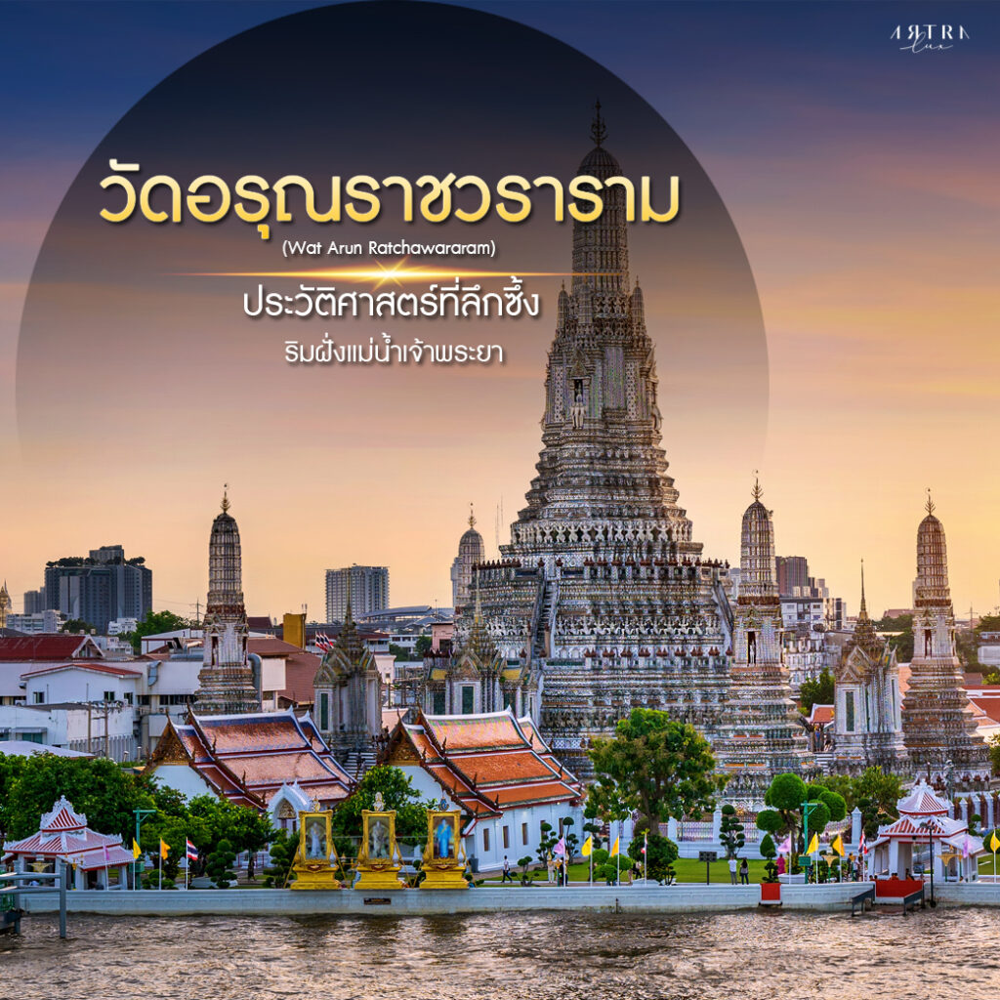
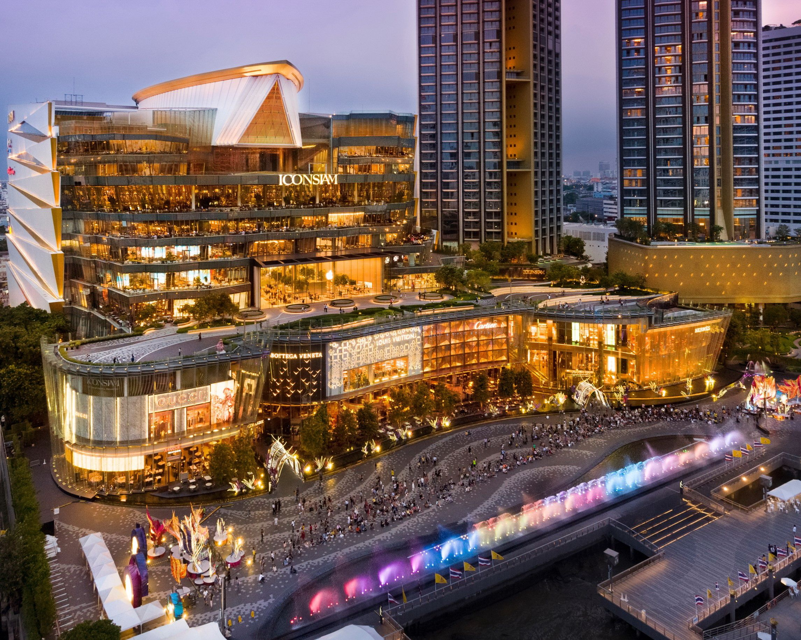

วัดพระแก้ว

วัดคู่บ้านคู่เมืองของประเทศไทย ประดิษฐานพระแก้วมรกต ตั้งอยู่ภายในพระบรมมหาราชวัง
📍 เขตพระนคร
⏰ 08:30 – 15:30 น.
⏰ 08:30 – 15:30 น.
วัดอรุณราชวราราม
วัดริมแม่น้ำเจ้าพระยา โดดเด่นด้วยพระปรางค์สูงใหญ่ สวยงามเป็นพิเศษในช่วงพระอาทิตย์ตก
📍 เขตบางกอกใหญ่
⏰ 08:00 – 18:00 น.
⏰ 08:00 – 18:00 น.
ถนนข้าวสาร

แหล่งท่องเที่ยวยอดนิยมของนักท่องเที่ยวจากทั่วโลก เต็มไปด้วยร้านอาหาร ร้านค้า และสีสันยามค่ำคืน
📍 เขตพระนคร
⏰ เปิดตลอดวัน
⏰ เปิดตลอดวัน
ICONSIAM
ศูนย์การค้าริมแม่น้ำเจ้าพระยา รวมร้านอาหาร แหล่งช้อปปิ้ง และวัฒนธรรมไทยร่วมสมัย
📍 เขตคลองสาน
⏰ 10:00 – 22:00 น.
⏰ 10:00 – 22:00 น.